本章內容 16.1 決策樹長什麼樣：讀樹與區域 16.2 樹怎麼長出來：遞迴二元分割 16.3 修剪：成本複雜度 16.4 樹與線性模型 16.5 Bagging 與隨機森林 16.6 Boosting 本章對應講義第 16 課，讀本是 ISLR 第 8 章（第二版跳過 8.2.4、8.2.5、8.3.5）。會用到第 1 章的偏差與變異數、第 6 章的交叉驗證、第 8 章 lasso 的懲罰概念、第 15 章的 KNN。
記號。 葉子（終端節點）\(R_1,\ldots,R_J\)；\(|T|\) 是葉子數；\(\hat y_{R_j}\) 是葉子 \(R_j\) 的預測；\(\hat p_{mk}\) 是節點 \(m\) 中類別 \(k\) 的比例；\(B\) 是樹的棵數；\(p\) 是解釋變數個數，\(m\) 是隨機森林每次分割可考慮的變數數。
考點地圖：這一章在考試裡的位置
對應考綱 ：主題 4「決策樹」（占 20～25%）：建構迴歸樹與分類樹、修剪、解讀；bagging、隨機森林、boosting 的原理與比較。
SOA 官方樣題裡的樣子 （2024 版，共十五題以上）：
類型
樣題
讀樹求預測值、排序
33、51、63
樹 ↔ 區域圖
48、66
依樹計算各葉子的平均
57
分類樹的分割準則（Gini、熵、錯誤數）
9
修剪
25
樹能不能完美分類某個圖形
26
樹的優點、彈性與可解釋性
12、29、50
隨機森林
10、41
GLM 還是隨機森林
39
boosting 的殘差與預測更新
68、69
會考的東西
題目長什麼樣
判斷或計算的依據
讀樹
給一筆資料，沿樹走到葉子
先確認「左邊是成立還是不成立」
樹與區域
哪一張區域圖對應這棵樹
每次分割只切一個變數，切出與座標軸平行的長方形
第一次分割
給資料，比較幾個候選分割
迴歸：兩邊 RSS 總和最小；分類：Gini 或熵的加權平均最小
不純度
算錯誤率、Gini、熵
\(1-\max\hat p_k\)；\(\sum\hat p_k(1-\hat p_k)\)；\(-\sum\hat p_k\ln\hat p_k\)
修剪
給各節點的 RSS 與 \(\alpha\)，選修剪方式
最小化 \(\text{RSS}+\alpha|T|\)
bagging、隨機森林
概念：變異數、相關性、\(m\) 的選擇、袋外誤差
平均降低變異數；\(m=p\) 就是 bagging；\(m\approx\sqrt p\)
boosting
三個參數；殘差與預測的更新
\(\hat f\leftarrow\hat f+\lambda\hat f^b\)，\(r\leftarrow r-\lambda\hat f^b\)；\(B\) 太大會過度配適
讀完這一章要會 ：
讀樹、把樹畫成區域、從區域圖辨認樹。
用 RSS、分類錯誤率、Gini、熵比較候選分割。
用成本複雜度修剪選擇子樹，說出 \(\alpha\) 的作用。
說出樹相對於線性模型的優缺點。
說明 bagging、隨機森林、boosting 的做法、參數與為什麼能降低誤差。
16.1 決策樹長什麼樣：讀樹與區域 一、結構
決策樹用一連串「是／否」問題把資料分組：
每個內部節點 問一個問題，例如「\(X_1<4\)？」或「房屋類型是平房？」，答案把資料分到左右兩個分支。每次分割都是二元 的；三類的類別變數要分兩次才能完全分開。
最下面的葉子 （終端節點）給預測：迴歸樹 用該區域反應變數的平均 ；分類樹 用該區域最常見的類別（多數決）。
數值變數的分割要選一個切點；不同節點可以問不同的問題，同一個變數在不同分支也可以有不同切點。
樹是倒著畫的：根在上面，葉子在下面。
二、樹就是把空間切成長方形
每一個葉子對應預測變數空間中的一塊長方形 （多維時是長方體），邊與座標軸平行。因為每次只用一個變數、一個切點把一塊切成兩塊。
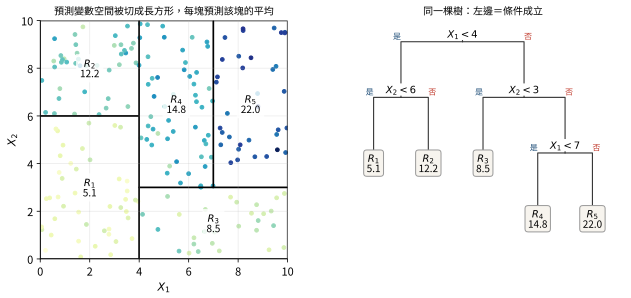
200 筆模擬資料（顏色深淺代表 \(y\)）。左：樹把 \((X_1,X_2)\) 平面切成五個長方形，每塊預測該塊 \(y\) 的平均（5.1、12.2、8.5、14.8、22.0）。右：同一棵樹的畫法。先用 \(X_1<4\) 切出左右兩大塊，左邊再用 \(X_2<6\) 切；右邊用 \(X_2<3\) 切，上半部再用 \(X_1<7\) 切。
例題 16-1：讀樹（SOA 樣題第 63 題，習題 16.2）
汽車座椅銷量的迴歸樹（左＝是）：根節點問「ShelveLoc = Bad 或 Medium？」。一筆資料 ShelveLoc = Good、Price = 120、Age = 57。
ShelveLoc 是 Good，答「否」，往右；右邊節點問「Price ≥ 110？」，120 是，往左，到葉子 9.2 ，答案 (D)。Age、Advertising 用不到。
例題 16-2：由樹寫出區域（SOA 樣題第 66 題）
樹（左＝不等式成立）：先問 \(X_1\le5\)；成立時再問 \(X_2\le40\)，得到區域 1、2；不成立時問 \(X_1\le10\)，成立是區域 3；不成立再問 \(X_2\le60\)，得到區域 4、5。
所以區域 3 是 \(\{5<X_1\le10\}\)（\(X_2\) 不限），區域 4、5 是 \(X_1>10\) 且 \(X_2\le60\) 或 \(>60\)。寫區域時，一定要把從根到葉子路徑上所有的條件 都寫進去，例如區域 3 必須同時滿足「\(X_1>5\)」和「\(X_1\le10\)」。
易錯提醒
先看左右分支哪一邊是「成立」 。SOA 的題目大多是左邊成立，但樣題 51（鴨子體重）的圖是左邊 [no]、右邊 [yes]。類別變數的條件「\(Y=\) A, B」表示 \(Y\) 是 A 或 B 時往成立那一邊。
區域圖辨認題：從根開始，第一個切點一定是整個 圖中貫穿的那條線；後面的切點只切其中一塊（樣題 48）。
考試怎麼考：讀樹
讀樹求預測 （樣題 33、51、63）：逐層判斷，最後比較大小或選數字。樹 ↔ 區域 （樣題 48、66）：每個葉子的區域＝路徑上所有條件的交集。給資料與樹，求各葉子的平均 （樣題 57）：把每筆資料送到它的葉子，同一葉子的反應變數取平均。
這一節的精選習題
[SRM Sample Question #63] You have constructed the following regression tree predicting unit sales (in thousands) of car seats. The variable ShelveLoc has possible values Good, Medium, and Bad.
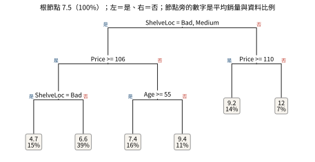
依題目原圖重畫。中間節點的平均與比例：左子樹根 6.8（75%）、右子樹根 10（21%）、Price ≥ 106 的左側 6（52%）、右側 8.2（27%）。 In this tree, the left branch at each node is "Yes" and the right branch is "No".
Variable
Observed Value
ShelveLoc
Good
Price
120
Age
57
Advertising
12
Determine the predicted unit sales (in thousands) for the above observation based on the regression tree.
(A) 4.7
(B) 6.6
(C) 7.4
(D) 9.2
(E) 9.4
隱藏解答 中文題意
（SOA 樣題第 63 題）預測汽車座椅銷量（千）的迴歸樹如下，ShelveLoc 有 Good、Medium、Bad 三種值。左分支是「是」、右分支是「否」。
一筆觀察：ShelveLoc = Good、Price = 120、Age = 57、Advertising = 12。求這筆觀察的預測銷量（千）。
(A) 4.7 (B) 6.6 (C) 7.4 (D) 9.2 (E) 9.4
（數據、圖表與選項見上方英文題目。）
解析
根節點：ShelveLoc 是 Good，不是 Bad 或 Medium，往右。右節點：Price = 120 ≥ 110，往左，到 9.2。
[SRM Sample Question #33] The regression tree shown below was produced from a dataset of auto claim payments. Age Category (1, 2, 3, 4, 5, 6) and Vehicle Age (1, 2, 3, 4) are both predictor variables, and log of claim amount (LCA) is the dependent variable.
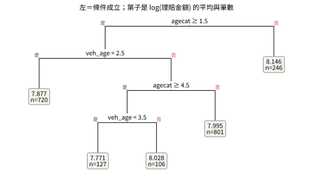
依題目原圖重畫。 Consider three autos I, II, III:
I. An Auto in Age Category 1 and Vehicle Age 4
II. An Auto in Age Category 5 and Vehicle Age 5
III. An Auto in Age Category 5 and Vehicle Age 3
Rank the estimated LCA of Autos I, II, and III.
(A) LCA(I) < LCA(II) < LCA(III)
(B) LCA(I) < LCA(III) < LCA(II)
(C) LCA(II) < LCA(I) < LCA(III)
(D) LCA(II) < LCA(III) < LCA(I)
(E) LCA(III) < LCA(II) < LCA(I)
隱藏解答 中文題意
（SOA 樣題第 33 題）以汽車理賠資料建立的迴歸樹：預測變數為年齡類別 agecat（1～6）與車齡 veh_age（1～4），反應變數是理賠金額的對數（LCA）。
三輛車：I. 年齡類別 1、車齡 4；II. 年齡類別 5、車齡 5；III. 年齡類別 5、車齡 3。將 LCA 的估計值排序。
(A) LCA(I) < LCA(II) < LCA(III)
(B) LCA(I) < LCA(III) < LCA(II)
(C) LCA(II) < LCA(I) < LCA(III)
(D) LCA(II) < LCA(III) < LCA(I)
(E) LCA(III) < LCA(II) < LCA(I)
（數據、圖表與選項見上方英文題目。）
解析
I：agecat = 1 < 1.5，直接往右，8.146。
II：agecat ≥ 1.5 往左；veh_age = 5 ≥ 2.5 往右；agecat ≥ 4.5 往左；veh_age ≥ 3.5 往右，8.028。
III：同 II，但最後 veh_age = 3 < 3.5 往左，7.771。
7.771 < 8.028 < 8.146。
[SRM Sample Question #51] You are given the following regression tree predicting the weight of ducks in kilograms (kg):
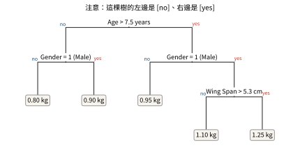
依題目原圖重畫，注意每個節點左邊是 [no]、右邊是 [yes]。 You predict the weight of the following three ducks:
X: Wing Span = 5.5 cm, Male, Age = 7 years
Y: Wing Span = 5.8 cm, Female, Age = 5 years
Z: Wing Span = 5.7 cm, Male, Age = 8 years
Determine the order of the predicted weights of the three ducks.
(A) X < Y < Z
(B) X < Z < Y
(C) Y < X < Z
(D) Y < Z < X
(E) Z < X < Y
隱藏解答 中文題意
（SOA 樣題第 51 題）預測鴨子體重（公斤）的迴歸樹：
三隻鴨子：X：翼展 5.5 公分、公、7 歲；Y：翼展 5.8 公分、母、5 歲；Z：翼展 5.7 公分、公、8 歲。將預測體重排序。
(A) X < Y < Z (B) X < Z < Y (C) Y < X < Z (D) Y < Z < X (E) Z < X < Y
（數據、圖表與選項見上方英文題目。）
解析
X：7 歲，不大於 7.5，往 [no]（左）；公，往 [yes]（右），0.90。
Y：5 歲往左；母往左，0.80。
Z：8 歲往右；公往右；翼展 5.7 > 5.3 往右，1.25。
0.80 < 0.90 < 1.25。
[SRM Sample Question #48] The following tree was constructed using recursive binary splitting with the left branch indicating that the inequality is true.
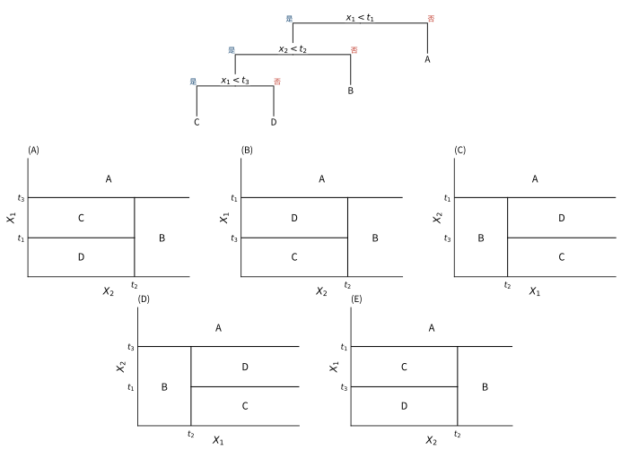
依題目原圖重畫。上方是樹，下方是五個候選的區域圖 (A)～(E)，每張圖的縱軸與橫軸變數、切點位置不同。 Determine which of the following plots represents the tree.
(A) Plot (A)
(B) Plot (B)
(C) Plot (C)
(D) Plot (D)
(E) Plot (E)
隱藏解答 中文題意
（SOA 樣題第 48 題）以遞迴二元分割建立的樹如下（左分支表示不等式成立）。哪一張圖代表這棵樹？
(A) 圖 (A) (B) 圖 (B) (C) 圖 (C) (D) 圖 (D) (E) 圖 (E)
（數據、圖表與選項見上方英文題目。）
解析
第一刀 \(x_1<t_1\) 貫穿全圖：\(x_1\ge t_1\) 是 A。所以 A 是 \(x_1\) 大的那一塊，縱軸是 \(X_1\)、A 在 \(t_1\) 上方。這排除 (A)、(D)（\(t_1\) 在下面）與 (C)（縱軸是 \(X_2\)）。
\(x_1<t_1\) 之中，\(x_2\ge t_2\) 是 B（右邊）。
剩下的再用 \(x_1<t_3\)：\(x_1<t_3\) 是 C（下方），\(t_3\le x_1<t_1\) 是 D（中間）。(E) 把 C、D 放反了。
只有 (B) 符合。
[SRM Sample Question #57] You are given
(i) The following observed values of the response variable, \(R\), and predictor variables \(X\), \(Y\), \(Z\):
\(R\)
4.75
4.67
4.67
4.56
4.53
3.91
3.90
3.90
3.89
\(X\)
M
F
M
F
M
F
F
M
M
\(Y\)
A
A
D
D
B
C
B
D
B
\(Z\)
2
4
1
3
2
2
5
5
1
(ii) The following plot of the corresponding regression tree:
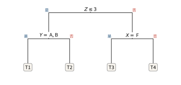
依題目原圖重畫。 Calculate the Mean Response (MR) for each of the end nodes.
(A) MR(T1) = 4.39, MR(T2) = 4.38, MR(T3) = 4.29, MR(T4) = 3.90
(B) MR(T1) = 4.26, MR(T2) = 4.38, MR(T3) = 4.62, MR(T4) = 3.90
(C) MR(T1) = 4.26, MR(T2) = 4.39, MR(T3) = 3.90, MR(T4) = 4.29
(D) MR(T1) = 4.64, MR(T2) = 4.29, MR(T3) = 4.38, MR(T4) = 3.90
(E) MR(T1) = 4.64, MR(T2) = 4.38, MR(T3) = 4.39, MR(T4) = 3.90
隱藏解答 中文題意
（SOA 樣題第 57 題）反應變數 \(R\) 與預測變數 \(X\)、\(Y\)、\(Z\) 的觀察：
對應的迴歸樹（左＝成立）：
求每個葉子的平均反應 MR。
(A) MR(T1)=4.39，MR(T2)=4.38，MR(T3)=4.29，MR(T4)=3.90
(B) MR(T1)=4.26，MR(T2)=4.38，MR(T3)=4.62，MR(T4)=3.90
(C) MR(T1)=4.26，MR(T2)=4.39，MR(T3)=3.90，MR(T4)=4.29
(D) MR(T1)=4.64，MR(T2)=4.29，MR(T3)=4.38，MR(T4)=3.90
(E) MR(T1)=4.64，MR(T2)=4.38，MR(T3)=4.39，MR(T4)=3.90
（數據、圖表與選項見上方英文題目。）
解析
把每筆送到葉子：
T1（\(Z\le3\)、\(Y\) 是 A 或 B）：4.75、4.53、3.89，平均 4.39。
T2（\(Z\le3\)、\(Y\) 是 C 或 D）：4.67、4.56、3.91，平均 4.38。
T3（\(Z>3\)、\(X=\) F）：4.67、3.90，平均 4.285。
T4（\(Z>3\)、\(X=\) M）：3.90。
觀念題（4 題，仿 SOA 樣題的觀念判斷與小計算，含跨章節）
A regression tree has root split \(X_1<5\). If true (left), the next split is \(X_2<3\), with leaf predictions 10 (true) and 14 (false). If \(X_1\ge5\) (right), the prediction is 20.
Determine the prediction for \((X_1,X_2)=(4,6)\).
(A) 10
(B) 14
(C) 20
(D) 12
(E) 17
隱藏解答 中文題意
迴歸樹根節點 \(X_1<5\)；成立（左）時再問 \(X_2<3\)，葉子預測 10（成立）與 14（不成立）；\(X_1\ge5\) 時預測 20。求 \((4,6)\) 的預測。
解析
\(X_1=4<5\) 往左；\(X_2=6\ge3\) 往右，14。(D)、(E) 是把葉子平均，樹不會這樣做。
A binary decision tree has 7 internal (split) nodes.
Determine the number of terminal nodes.
(A) 7
(B) 6
(C) 8
(D) 14
(E) 15
隱藏解答 中文題意
二元決策樹有 7 個內部（分割）節點，終端節點有幾個？
解析
每一次二元分割讓葉子數加 1：從 1 片開始，分 7 次得到 8 片。(E) 是全部節點數。
A regression tree first splits on \(X_1\le5\). The left branch splits on \(X_2\le40\) into Regions 1 and 2. The right branch splits on \(X_1\le10\): the left child is Region 3, and the right child splits on \(X_2\le60\) into Regions 4 and 5. (Left branches indicate the inequality is true.)
Determine Region 3.
(A) \(\{5<X_1\le10\}\)
(B) \(\{X_1\le10\}\)
(C) \(\{X_1>5\}\)
(D) \(\{5<X_1\le10,\ X_2\le60\}\)
(E) \(\{X_1\le5,\ X_2>40\}\)
隱藏解答 中文題意
迴歸樹先問 \(X_1\le5\)；左邊再問 \(X_2\le40\)，分出區域 1、2；右邊問 \(X_1\le10\)，成立是區域 3，不成立再問 \(X_2\le60\) 分出區域 4、5。求區域 3。
解析
區域 3 的路徑是「\(X_1\le5\) 不成立」且「\(X_1\le10\) 成立」，所以 \(5<X_1\le10\)；\(X_2\) 沒被問到，不限。這是 SOA 樣題 66 的關鍵。(B) 漏了第一個條件；(D) 把區域 4 的條件誤加進來。
A terminal node of a classification tree contains 7 observations of class A and 5 of class B.
Determine the predicted class and the node's classification error rate.
(A) B; 7/12
(B) A; 7/12
(C) A; 5/7
(D) A; 5/12
(E) B; 5/12
隱藏解答 中文題意
分類樹某個葉子有 A 類 7 筆、B 類 5 筆，預測哪一類？錯誤率多少？
解析
多數決預測 A；錯誤率 \(1-7/12=5/12\)。(C) 分母用錯。
16.2 樹怎麼長出來：遞迴二元分割 一、迴歸樹：最小化 RSS
理想上要找讓
\[\text{RSS}=\sum_{j=1}^J\sum_{i\in R_j}(y_i-\hat y_{R_j})^2\]
最小的分區，但可能的分法太多，算不完。實際用遞迴二元分割 （recursive binary splitting）：
在目前的區域中，試所有變數 \(X_j\) 與所有切點 \(s\)，把區域切成 \(\{X_j<s\}\) 與 \(\{X_j\ge s\}\)。
選讓兩邊 RSS 總和
\[\sum_{x_i\in R_1(j,s)}(y_i-\hat y_{R_1})^2+\sum_{x_i\in R_2(j,s)}(y_i-\hat y_{R_2})^2\]
最小的那一刀。
對切出來的區域重複，直到每個區域的觀察數少於某個門檻（例如 5）。
它是由上而下 （從整個空間開始）而且貪婪 （greedy）的：每一步只選當下最好的一刀，不考慮「現在差一點、之後會更好」的切法，和第 7 章 的逐步選擇一樣。
例題 16-3：選第一刀（習題 16.5）
四筆資料 \((X,Y)\)：(0,8)、(1,5)、(3,8)、(6,6)。只有一個變數，只需要比較三種切法：
切法
左群
右群
RSS
\(X<0.5\)
8
5、8、6（平均 19/3）
\(0+(1.778+2.778+0.111)=4.667\)
\(X<2\)
8、5（平均 6.5）
8、6（平均 7）
\(4.5+2=6.5\)
\(X<4.5\)
8、5、8（平均 7）
6
\(6+0=6\)
第一種最小：(0,8) 單獨一群，其餘三筆一群。
用計算機算一片葉子的 RSS
葉子用平均數預測，所以 \(\text{RSS}=\sum(y_i-\bar y)^2=n\,\sigma y^2\)。把這片葉子的 \(y\) 輸入 L1，做 1-Var Stats，讀 \(n\) 和 \(\sigma x\) 就能算出來，不用一項一項減平均再平方。比較好幾種切法時特別省時間，例題見計算機操作第 5 節 。
二、分類樹：錯誤率、Gini、熵
分類樹的葉子預測多數類別。衡量一個節點 \(m\)「多純」的三種指標（\(\hat p_{mk}\) 是節點中類別 \(k\) 的比例）：
指標
公式
兩類時（比例 \(p\)）
分類錯誤率
\(E=1-\max_k\hat p_{mk}\)
\(1-\max(p,1-p)\)
Gini 指數
\(G=\sum_k\hat p_{mk}(1-\hat p_{mk})\)
\(2p(1-p)\)
熵（entropy）
\(D=-\sum_k\hat p_{mk}\ln\hat p_{mk}\)
\(-p\ln p-(1-p)\ln(1-p)\)
（熵中 \(0\ln0\) 視為 0。）三者都在節點完全純（某一類比例為 1）時等於 0，在各類平均分配時最大。
一次分割後的總值 ：各子節點的指標，以觀察數比例 加權平均。
長樹用 Gini 或熵，不用錯誤率 ：錯誤率不夠敏感。例如 16 個 A、4 個 B（Gini 0.32），分成「10 個 A」與「6 個 A、4 個 B」，兩邊都預測 A，錯誤數完全沒變（都是 4），但 Gini 降為 \(0.5(0)+0.5(0.48)=0.24\)：節點變純了，之後更容易繼續分好。所以會出現「分割後兩個葉子預測同一類」的情況。
修剪時 ，如果目標是預測準確度，最好用分類錯誤率。
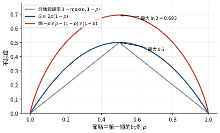
兩類時三種不純度隨比例 \(p\) 的變化。都在 \(p=0\)、\(1\) 為 0、在 \(p=0.5\) 最大；錯誤率是折線（最大 0.5），Gini 是拋物線（最大 0.5），熵最大 \(\ln2=0.693\)。Gini 和熵是平滑的凹函數，對節點純度的小改善也有反應。
例題 16-4：Gini 與熵（講義例 16A）
10 筆資料，類別比例 A 0.3、B 0.4、C 0.3。
分割前 ：\(G=0.3(0.7)+0.4(0.6)+0.3(0.7)=0.66\)；\(D=-[0.3\ln0.3+0.4\ln0.4+0.3\ln0.3]=1.0889\)。
分割後 ：左群 6 筆（A、B 各半），右群 4 筆（B 0.25、C 0.75）。
\[G=0.6\big[2(0.5)(0.5)\big]+0.4\big[2(0.25)(0.75)\big]=0.6(0.5)+0.4(0.375)=0.45,\]
\[D=0.6(\ln2)+0.4\big[-0.25\ln0.25-0.75\ln0.75\big]=0.6(0.6931)+0.4(0.5623)=0.6408 .\]
例題 16-5：三種準則可能選不同的分割（SOA 樣題第 9 題，習題 16.18）
100 張保單 30 張失效。分割 1：(20 張、12 失效) 與 (80 張、18 失效)；分割 2：(10 張、8 失效) 與 (90 張、22 失效)。
分割 1
分割 2
Gini
\(0.2(2\cdot0.6\cdot0.4)+0.8(2\cdot0.775\cdot0.225)=0.375\)
\(0.1(2\cdot0.8\cdot0.2)+0.9(2\cdot\frac{68}{90}\cdot\frac{22}{90})=0.3644\)
熵
0.5611
0.5506
錯誤數
8＋18＝26
2＋22＝24
三個準則都偏好分割 2，所以「分割 1 較好」的三句話都錯，答案 (E)。
R 的 residual mean deviance ：迴歸樹是 \(\text{RSS}/(n-|T|)\)；分類樹是 \(-2\sum_m\sum_kn_{mk}\ln\hat p_{mk}\,/\,(n-|T|)\)，其中 \(n_{mk}\) 是節點 \(m\) 中類別 \(k\) 的個數、\(\hat p_{mk}\) 是節點內的比例。
考試怎麼考：分割準則
迴歸樹的第一刀 （MAS-II 樣題 12）：對每個候選分割算兩邊 RSS 總和，選最小。沒有把資料分開的「分割」RSS 等於總平方和。分類樹 （樣題 9）：Gini、熵要用觀察數加權平均；錯誤數要先決定每個節點預測哪一類。單一節點的指標 （習題 16.14 ～16.16 ）：直接套公式。概念 ：貪婪、由上而下；長樹用 Gini 或熵，因為比錯誤率敏感。
這一節的精選習題
[MAS-II Sample:12] A data set contains six observations for two predictor variables, \(X_1\) and \(X_2\), and a response variable, \(Y\).
\(X_1\)
1
2
3
4
2
1
\(X_2\)
0
1
2
1
2
1
\(Y\)
1.2
2.1
1.5
3.0
2.0
1.6
A regression tree is constructed using recursive binary splitting. A split is denoted \(R_1(j,s)=\{X\mid X_j<s\}\) and \(R_2(j,s)=\{X\mid X_j\ge s\}\). The following five splits are analyzed.
I. \(R_1(1,1)=\{X\mid X_1<1\}\) and \(R_2(1,1)=\{X\mid X_1\ge1\}\)
II. \(R_1(1,4)=\{X\mid X_1<4\}\) and \(R_2(1,4)=\{X\mid X_1\ge4\}\)
III. \(R_1(2,0)=\{X\mid X_2<0\}\) and \(R_2(2,0)=\{X\mid X_2\ge0\}\)
IV. \(R_1(2,1)=\{X\mid X_2<1\}\) and \(R_2(2,1)=\{X\mid X_2\ge1\}\)
V. \(R_1(2,2)=\{X\mid X_2<2\}\) and \(R_2(2,2)=\{X\mid X_2\ge2\}\)
Determine which split is chosen first.
(A) I
(B) II
(C) III
(D) IV
(E) V
隱藏解答 中文題意
（MAS-II 樣題第 12 題）六筆觀察：
以遞迴二元分割建立迴歸樹，分割記為 \(R_1(j,s)=\{X\mid X_j<s\}\)、\(R_2(j,s)=\{X\mid X_j\ge s\}\)。考慮五種分割：
I. \(R_1(1,1)\)、\(R_2(1,1)\)
II. \(R_1(1,4)\)、\(R_2(1,4)\)
III. \(R_1(2,0)\)、\(R_2(2,0)\)
IV. \(R_1(2,1)\)、\(R_2(2,1)\)
V. \(R_1(2,2)\)、\(R_2(2,2)\)
哪一個分割會最先被選？
(A) I (B) II (C) III (D) IV (E) V
（數據、圖表與選項見上方英文題目。）
解析
I、III：\(X_1<1\)、\(X_2<0\) 沒有任何觀察，等於沒切，RSS ＝總平方和 2.0。
II：\(X_1\ge4\) 只有 3.0；其餘 1.2、2.1、1.5、2.0、1.6 平均 1.68，RSS 0.548。
IV：\(X_2<1\) 只有 1.2；其餘平均 2.04，RSS 1.412。
V：\(X_2<2\) 的 1.2、2.1、3.0、1.6（平均 1.975，RSS 1.8075）；\(X_2\ge2\) 的 1.5、2.0（RSS 0.125）；合計 1.9325。
II 最小。
A classification tree is constructed to predict whether students will pass Exam SRM on their first try. Two binary explanatory variables are used: \(X_1\) (Did the student take a statistics course in college?) and \(X_2\) (Did the student pass FAM?) Available data is as follows:
Passed on first try
Didn't
\(X_1=0,X_2=0\)
5
20
\(X_1=1,X_2=0\)
10
10
\(X_1=0,X_2=1\)
7
9
\(X_1=1,X_2=1\)
6
4
Determine the first split made in the tree using the Gini index.
隱藏解答 中文題意
建立分類樹預測學生第一次考 SRM 是否通過。兩個二元變數：\(X_1\)（大學修過統計？）、\(X_2\)（通過 FAM？）。資料：\(X_1=0,X_2=0\)：5 人通過、20 人沒過；\(X_1=1,X_2=0\)：10 過、10 沒過；\(X_1=0,X_2=1\)：7 過、9 沒過；\(X_1=1,X_2=1\)：6 過、4 沒過。用 Gini 指數決定第一刀。
答案
用 \(X_1\) 分割（Gini 0.4494 < 0.4648）
解析
用 \(X_1\) ：\(X_1=0\) 共 41 人（12 過、29 沒過）；\(X_1=1\) 共 30 人（16 過、14 沒過）。
\[\frac{41}{71}\cdot2\cdot\frac{12}{41}\cdot\frac{29}{41}+\frac{30}{71}\cdot2\cdot\frac{16}{30}\cdot\frac{14}{30}=0.2391+0.2103=0.4494 .\]
用 \(X_2\) ：\(X_2=0\) 共 45 人（15 過、30 沒過）；\(X_2=1\) 共 26 人（13、13）。
\[\frac{45}{71}(0.4444)+\frac{26}{71}(0.5)=0.2817+0.1831=0.4648 .\]
\(X_1\) 的 Gini 較小。
[MAS-II-F18:40] You are given the following classification decision tree and data set:
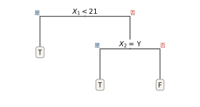
依題目原圖重畫。
\(i\)
1
2
3
4
5
6
7
\(X_1\)
12
23
4
32
22
30
18
\(X_2\)
Y
N
Y
Y
N
Y
N
\(Y\)
T
F
F
F
T
T
T
Determine the relationship between the classification error rate, the Gini index, and the entropy, summed across all nodes.
(A) entropy > Gini index > classification error rate
(B) entropy > Gini index = classification error rate
(C) classification error rate > Gini index > entropy
(D) Gini index > entropy > classification error rate
(E) The answer is not given by (A), (B), (C), or (D).
隱藏解答 中文題意
（2018 秋季 MAS-II 第 40 題）分類決策樹（左＝成立）與資料：
求分類錯誤率、Gini 指數、熵（各自把所有節點加總）的大小關係。
(A) 熵 > Gini > 分類錯誤率
(B) 熵 > Gini = 分類錯誤率
(C) 分類錯誤率 > Gini > 熵
(D) Gini > 熵 > 分類錯誤率
(E) 以上皆非
（數據、圖表與選項見上方英文題目。）
解析
三個葉子：
\(X_1<21\)：\(i=1,3,7\)，T 兩個、F 一個。錯誤率 \(1/3\)、Gini \(2\cdot\frac13\cdot\frac23=\frac49\)、熵 \(0.6365\)。
\(X_1\ge21\)、\(X_2=\) Y：\(i=4,6\)，T、F 各一。錯誤率 \(1/2\)、Gini \(1/2\)、熵 \(\ln2=0.6931\)。
\(X_1\ge21\)、\(X_2=\) N：\(i=2,5\)，T、F 各一。同上。
加總：錯誤率 1.333、Gini 1.444、熵 2.023。題目要的是加總（不是加權平均），講義也這樣解。
[SRM Sample Question #9] A classification tree is being constructed to predict if an insurance policy will lapse. A random sample of 100 policies contains 30 that lapsed. You are considering two splits:
Split 1: One node has 20 observations with 12 lapses and one node has 80 observations with 18 lapses.
Split 2: One node has 10 observations with 8 lapses and one node has 90 observations with 22 lapses.
The total Gini index after a split is the weighted average of the Gini index at each node, with the weights proportional to the number of observations in each node. The total entropy after a split is the weighted average of the entropy at each node, with the weights proportional to the number of observations in each node.
Determine which of the following statements is/are true.
I. Split 1 is preferred based on the total Gini index.
II. Split 1 is preferred based on the total entropy.
III. Split 1 is preferred based on having fewer classification errors.
(A) I only
(B) II only
(C) III only
(D) I, II, and III
(E) The correct answer is not given by (A), (B), (C), or (D).
隱藏解答 中文題意
（SOA 樣題第 9 題）建立分類樹預測保單是否失效。100 張保單中 30 張失效。兩種分割：分割 1：一個節點 20 張（12 張失效）、另一個 80 張（18 張失效）；分割 2：一個節點 10 張（8 張失效）、另一個 90 張（22 張失效）。總 Gini（熵）是各節點 Gini（熵）以觀察數比例加權平均。下列哪些正確？
I. 依總 Gini，分割 1 較好。
II. 依總熵，分割 1 較好。
III. 依分類錯誤數較少，分割 1 較好。
(A) 只有 I (B) 只有 II (C) 只有 III (D) I、II、III (E) 以上皆非
解析
分割 1
分割 2
Gini
\(0.2(0.48)+0.8(0.34875)=0.3750\)
\(0.1(0.32)+0.9(0.36938)=0.3644\)
熵
0.5611
0.5506
錯誤數
8＋18＝26
2＋22＝24
三種準則都是分割 2 較好，三句話都錯。
觀念題（7 題，仿 SOA 樣題的觀念判斷與小計算，含跨章節）
A node of a classification tree has two classes with proportions 0.3 and 0.7.
Calculate the Gini index of the node.
(A) 0.42
(B) 0.21
(C) 0.30
(D) 0.61
(E) 0.58
隱藏解答 中文題意
分類樹某節點兩類比例 0.3、0.7，求 Gini 指數。
解析
\(0.3(0.7)+0.7(0.3)=0.42\)。(B) 只算了一項；(D) 是熵 \(-0.3\ln0.3-0.7\ln0.7=0.611\)；(C) 是錯誤率。
A node of a classification tree has two classes in equal proportions.
Calculate the entropy of the node (natural logarithm).
(A) 0.500
(B) 1.000
(C) 0.250
(D) 0.347
(E) 0.693
隱藏解答 解析
\(-2(0.5\ln0.5)=\ln2=0.693\)，這是兩類時熵的最大值。(A) 是 Gini 的最大值；(B) 是以 2 為底的熵。
A regression tree with one predictor is fitted to the data \((x,y)\): (1,1), (2,2), (3,7), (4,8).
Calculate the RSS after the first split chosen by recursive binary splitting.
(A) 0.0
(B) 1.0
(C) 8.7
(D) 36.7
(E) 2.0
隱藏解答 中文題意
一個解釋變數的迴歸樹，資料 (1,1)、(2,2)、(3,7)、(4,8)。遞迴二元分割選出的第一刀之後，RSS 是多少？
解析
切在 2 與 3 之間：兩群平均 1.5、7.5，RSS \(=0.5+0.5=1.0\)。切在 1、2 之間：\(\{1\}\) 與 \(\{2,7,8\}\)（平均 5.67，RSS 20.67）；切在 3、4 之間：\(\{1,2,7\}\)（平均 3.33，RSS 20.67）與 \(\{8\}\)。所以選中間那刀。(D) 是不分割時的總平方和。
A split produces two nodes: Node 1 has 10 observations (8 class A, 2 class B), and Node 2 has 30 observations (15 class A, 15 class B).
Calculate the total Gini index after the split.
(A) 0.410
(B) 0.320
(C) 0.455
(D) 0.500
(E) 0.820
隱藏解答 中文題意
分割後兩個節點：節點 1 有 10 筆（A 8、B 2），節點 2 有 30 筆（A、B 各 15）。求分割後的總 Gini。
解析
節點 1：\(2(0.8)(0.2)=0.32\)；節點 2：\(0.5\)。以觀察數加權：\(\frac{10(0.32)+30(0.5)}{40}=0.455\)。
(A) 是兩者的簡單平均；(E) 是直接相加。
Determine which of the following statements about recursive binary splitting is/are true.
I. It is greedy: each split is the best split at that step only.
II. It is top-down: it starts from a single region containing all observations.
III. It is guaranteed to find the tree with the lowest possible RSS for its number of terminal nodes.
(A) II only
(B) III only
(C) I and II only
(D) I and III only
(E) The correct answer is not given by (A), (B), (C), or (D).
隱藏解答 中文題意
關於遞迴二元分割，下列哪些正確？
I. 它是貪婪的：每一刀只是當下最好。
II. 它是由上而下的：從包含全部觀察的單一區域開始。
III. 它保證找到同樣葉子數下 RSS 最小的樹。
解析
I、II 對。III 錯：貪婪演算法不保證全域最佳，這正是它被稱為貪婪的原因。
Determine the main reason the Gini index or entropy, rather than the classification error rate, is used to grow classification trees.
(A) They are more sensitive to changes in node purity
(B) They are always smaller than the error rate
(C) They can only be computed for two classes
(D) They do not require counting observations
(E) They guarantee that each split changes the predicted classes
隱藏解答 中文題意
長分類樹時用 Gini 或熵而不用分類錯誤率，主要原因是什麼？
解析
錯誤率只看多數類別的比例，很多讓節點變純的分割不會改變它；Gini 與熵是平滑的凹函數，對純度的改善都有反應。(E) 相反：用 Gini 時常出現兩邊預測同一類的分割。
A node with 16 class A and 4 class B observations is split into one node with 10 A and another with 6 A and 4 B.
Determine which of the following statements is/are true.
I. Both new nodes predict class A.
II. The split reduces the number of classification errors.
III. The split reduces the weighted Gini index.
(A) II only
(B) III only
(C) I and II only
(D) I and III only
(E) The correct answer is not given by (A), (B), (C), or (D).
隱藏解答 中文題意
A 16、B 4 的節點分成「A 10」與「A 6、B 4」兩個節點。
I. 兩個新節點都預測 A。
II. 這個分割減少了錯誤數。
III. 這個分割降低了加權 Gini。哪些正確？
解析
I 對。II 錯：分割前後都是 4 個 B 被分錯。III 對：0.32 降到 \(0.5(0)+0.5(0.48)=0.24\)。
16.3 修剪：成本複雜度 一、為什麼要修剪
一直分下去的大樹會過度配適 ：葉子越多，偏差越低、變異數越高（樣題 25：「分割越多變異數越低」是錯的）。先長一棵大樹 \(T_0\)，再修剪成適當大小的子樹。
二、成本複雜度修剪
給一個調整參數 \(\alpha\ge0\)，找讓
\[\sum_{m=1}^{|T|}\sum_{i:x_i\in R_m}(y_i-\hat y_{R_m})^2+\alpha|T|\tag{16.1}\]
最小的子樹 \(T\)。每多一片葉子要付 \(\alpha\) 的成本，和 lasso 的 \(\lambda\sum|\beta_j|\)（第 8 章 ）是同一個想法。也叫最弱連結修剪 （weakest link pruning）。
\(\alpha=0\)：不懲罰，選最大的樹 \(T_0\)。
\(\alpha\) 越大：樹越小。
隨 \(\alpha\) 增加得到的子樹是巢狀 的序列，很容易全部算出來。
用交叉驗證 選 \(\alpha\)（等價於選葉子數），再用最後選中的 \(\alpha\) 修剪在全部訓練資料上長的大樹。
推導：剪掉一個分割的門檻 \(\alpha\)
把節點 \(t\) 底下的分割剪掉，讓它變成一片葉子：RSS 增加 \(\Delta=\text{RSS}(t\text{ 當葉子})-\text{RSS}(t\text{ 底下的葉子})\)，葉子數減少 \(\ell-1\)（\(\ell\) 是 \(t\) 底下的葉子數）。
剪掉比較好的條件：\(\Delta-\alpha(\ell-1)\le0\)，即
\[\alpha\ge\frac{\Delta}{\ell-1}.\]
\(\Delta/(\ell-1)\) 最小的節點最先被剪掉，這就是「最弱連結」。
例題 16-6：剪掉的最小 \(\alpha\)（習題 16.11）
兩片葉子 \(R_4\)：2、3、3、4、5；\(R_5\)：2、4、6。
分開時：\(R_4\) 平均 3.4，平方和 5.2；\(R_5\) 平均 4，平方和 8；合計 13.2。合併後平均 3.625，平方和 13.875。
\(\Delta=0.675\)，葉子少 1，所以 \(\alpha\ge0.675\) 就會剪掉。
例題 16-7：比較修剪策略（MAS-II-F18:38，習題 16.9）
葉子 RSS：U 82、V 81、W 11、Y 20、Z 58；剪在 S、T、X 時的 RSS 分別是 251、209、86。\(\alpha=9\)。
策略
RSS
葉子數
RSS＋9×葉子數
不剪
252
5
297
剪 S
251＋11＋20＋58＝340
4
376
剪 T
82＋81＋209＝372
3
399
剪 X
82＋81＋11＋86＝260
4
296
剪 S 和 X
251＋11＋86＝348
3
375
剪 X 最小，答案 (D)。剪 X 只讓 RSS 增加 8，卻省下一片葉子的成本 9。
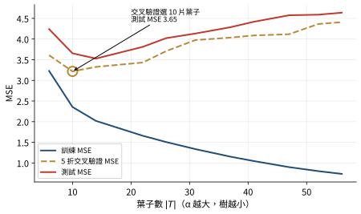
300 筆模擬資料長出的大樹，依成本複雜度剪成不同大小。訓練 MSE（藍）隨葉子增加一路下降，56 片葉子時只剩 0.74；測試 MSE（紅）在 10～15 片葉子附近最低，56 片時回升到 4.64。5 折交叉驗證（金）選 10 片葉子，對應的測試 MSE 3.65。
考試怎麼考：修剪
計算 \(\text{RSS}+\alpha|T|\) 比較策略；或求使剪枝發生的最小 \(\alpha\)。
概念（樣題 25）：遞迴二元分割可能過度配適；分割越多變異數越高 ；\(\alpha=0\) 得到很大的樹。
這一節的精選習題
[MAS-II-F18:38] You are given the following unpruned decision tree:
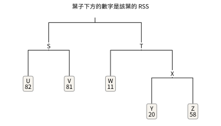
依題目原圖重畫。 The values at each terminal node are the residual sums of squares (RSS) at that node. The table below gives the RSS at nodes S, T, and X if the tree was pruned at those nodes:
Node
S
T
X
RSS
251
209
86
The RSS for the null model is 486. You use the cost complexity pruning algorithm with the tuning parameter, \(\alpha\), equal to 9 in order to evaluate the following pruning strategies:
I. No nodes pruned
II. Prune node S only
III. Prune node T only
IV. Prune node X only
V. Prune both nodes S and X
Determine which pruning strategy is selected.
(A) I
(B) II
(C) III
(D) IV
(E) V
隱藏解答 中文題意
（2018 秋季 MAS-II 第 38 題）未修剪的決策樹如下，葉子的數字是該葉的殘差平方和（RSS）：
若在 S、T、X 修剪（變成葉子），RSS 分別是 251、209、86。虛無模型的 RSS 是 486。用 \(\alpha=9\) 的成本複雜度修剪評估以下策略：I. 不剪；II. 只剪 S；III. 只剪 T；IV. 只剪 X；V. 剪 S 和 X。會選哪一個？
(A) I (B) II (C) III (D) IV (E) V
（數據、圖表與選項見上方英文題目。）
解析
計算 RSS ＋ 9 ×葉子數：
I：\(82+81+11+20+58=252\)，5 片，297。
II：\(251+11+20+58=340\)，4 片，376。
III：\(82+81+209=372\)，3 片，399。
IV：\(82+81+11+86=260\)，4 片，296。
V：\(251+11+86=348\)，3 片，375。
IV 最小。虛無模型的 RSS 用不到。
For a regression tree, two nodes of the tree have the following response values:
\(R_4\): 2, 3, 3, 4, 5
\(R_5\): 2, 4, 6
The tree is pruned using cost complexity pruning. The split of \(R_4\) and \(R_5\) is the optimal one to prune.
Determine the smallest value of \(\alpha\) for which pruning will occur.
隱藏解答 中文題意
迴歸樹的兩個節點的反應值：\(R_4\)：2、3、3、4、5；\(R_5\)：2、4、6。以成本複雜度修剪，\(R_4\) 與 \(R_5\) 的分割是最適合剪掉的。求會發生修剪的最小 \(\alpha\)。
解析
分開：\(R_4\) 平均 3.4，平方和 \(1.96+0.16+0.16+0.36+2.56=5.2\)；\(R_5\) 平均 4，平方和 8；合計 13.2。
合併：8 個值平均 3.625，平方和 \(119-8(3.625^2)=13.875\)。
剪掉使 RSS 增加 0.675、葉子少 1，\(\alpha\ge0.675\) 時剪掉。
觀念題（4 題，仿 SOA 樣題的觀念判斷與小計算，含跨章節）
In cost complexity pruning, collapsing a certain internal node into a single leaf increases the RSS by 12 and reduces the number of terminal nodes from 4 to 1.
Determine the smallest \(\alpha\) for which this pruning is worthwhile.
(A) 12
(B) 3
(C) 6
(D) 4
(E) 48
隱藏解答 中文題意
成本複雜度修剪中，把某個內部節點收成一片葉子，RSS 增加 12，該處的葉子從 4 片變成 1 片。\(\alpha\) 至少多少時值得剪？
解析
少了 3 片葉子，省下 \(3\alpha\)；\(3\alpha\ge12\)，\(\alpha\ge4\)。(B) 是除以 4。
Determine the effect of increasing the tuning parameter \(\alpha\) in cost complexity pruning.
(A) The selected subtree becomes larger
(B) The selected subtree becomes smaller
(C) The training RSS of the selected subtree decreases
(D) The variance of the selected subtree increases
(E) The selected subtree is unchanged
隱藏解答 中文題意
成本複雜度修剪中，\(\alpha\) 增加的效果是什麼？
解析
每片葉子的成本變高，選出的樹變小：訓練 RSS 上升、變異數下降、偏差上升。\(\alpha=0\) 時是整棵大樹。
Determine how the tuning parameter \(\alpha\) is typically selected in cost complexity pruning.
(A) By maximizing the training \(R^2\)
(B) By setting \(\alpha=0\)
(C) By cross-validation
(D) By setting \(\alpha\) equal to the number of terminal nodes
(E) By the Gini index
隱藏解答 中文題意
成本複雜度修剪的 \(\alpha\) 通常怎麼選？
解析
對一系列 \(\alpha\) 用 \(K\) 折交叉驗證估計測試誤差，選最小的。(A)、(B) 都會選到最大的樹。
Two subtrees are compared using cost complexity pruning with \(\alpha=5\). Tree A has RSS 100 and 8 terminal nodes; Tree B has RSS 130 and 4 terminal nodes.
Determine which tree is selected and its cost.
(A) Tree A; 140
(B) Tree B; 150
(C) Tree A; 108
(D) Tree B; 134
(E) They tie at 145
隱藏解答 中文題意
\(\alpha=5\) 比較兩棵子樹：A 的 RSS 100、8 片葉子；B 的 RSS 130、4 片葉子。選哪一棵？成本多少？
解析
A：\(100+5(8)=140\)；B：\(130+5(4)=150\)。選 A。(C)、(D) 忘了乘 \(\alpha\)。
16.5 Bagging 與隨機森林 單一棵樹的變異數很高。以下三種方法都用「很多棵樹」來降低誤差。
一、Bootstrap 與 bagging
Bootstrap ：從 \(n\) 筆資料中取後放回 抽 \(n\) 筆，得到一個新樣本。把手上的資料當成母體，從它重複模擬。
Bagging （bootstrap aggregation）：
抽 \(B\) 個 bootstrap 樣本。
每個樣本長一棵不修剪 的大樹（偏差低、變異數高）。
迴歸：\(\hat f_{\text{bag}}(x)=\frac1B\sum_{b=1}^B\hat f^{*b}(x)\)；分類：多數決。
推導：平均為什麼能降低變異數，以及它的極限
設每棵樹的預測變異數 \(\sigma^2\)，任兩棵的相關係數 \(\rho\)。\(B\) 棵平均的變異數：
\[\mathrm{Var}\Big(\frac1B\sum_b\hat f^{*b}\Big)=\frac{1}{B^2}\Big[B\sigma^2+B(B-1)\rho\sigma^2\Big]=\rho\sigma^2+\frac{1-\rho}{B}\sigma^2 .\]
- 樹獨立（\(\rho=0\)）時是 \(\sigma^2/B\)，\(B\) 越大越小。
- 有相關時，\(B\to\infty\) 只能降到 \(\rho\sigma^2\)。相關性決定了 bagging 的極限 ，這就是隨機森林要解決的問題。
- \(B\) 增加只會讓第二項變小，不會讓誤差上升：bagging 不會因為 \(B\) 太大而過度配適 。
二、袋外（OOB）誤差
一筆資料沒被某個 bootstrap 樣本抽到的機率是 \(\left(1-\frac1n\right)^n\to e^{-1}=0.368\)。所以每棵樹大約有 1/3 的資料沒用到，叫袋外 （out-of-bag）觀察。
對每筆資料，只用「沒用到它的那些樹」預測它，算出的誤差就是 OOB 誤差。它免費提供了測試誤差的估計，不需要另外做交叉驗證；\(B\) 夠大時，它幾乎等同於留一交叉驗證誤差。
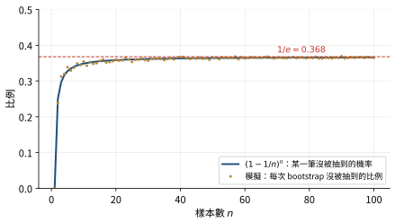
一筆資料沒被 bootstrap 樣本抽到的機率 \((1-1/n)^n\)。\(n=1\) 時是 0，\(n=10\) 時 0.349，很快趨近 \(1/e=0.368\)；金色點是每個 \(n\) 模擬 400 次的平均，和公式一致。 三、變數重要性
bagging 平均了幾百棵樹，失去了單一棵樹的可解釋性。補救方法是變數重要性 ：記錄每個變數在所有樹中的分割讓 RSS（迴歸）或 Gini（分類）總共下降多少，取平均，畫成長條圖（通常把最大的設為 100）。
四、隨機森林
bagging 的樹彼此相關：如果有一個很強的變數，幾乎每棵樹的第一刀都用它，樹長得很像。隨機森林 在每一次分割時，只從隨機抽出的 \(m\) 個變數 中選擇：
每次分割重新抽 \(m\) 個（不是整棵樹用同一組，樣題 10 的 II 錯）。
通常取 \(m\approx\sqrt p\)。
\(m=p\) 時就是 bagging。
強變數在某次分割不被考慮 的機率是 \(\frac{p-m}{p}\)（從 \(p\) 個中抽 \(m\) 個，沒抽到它的機率 \(\binom{p-1}{m}/\binom{p}{m}=\frac{p-m}{p}\)）。
樹之間的相關性 \(\rho\) 下降（去相關 ），平均的變異數極限 \(\rho\sigma^2\) 降低。
和 bagging 一樣，\(B\) 太大不會過度配適。
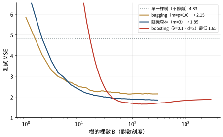
400 筆訓練資料、10 個彼此相關的解釋變數，4000 筆測試資料。單一棵不修剪的樹測試 MSE 4.83。bagging 隨 \(B\) 增加穩定下降到 2.15 後持平；隨機森林（\(m=3\)）因為樹之間比較不相關，降到 1.85；boosting 在 \(B=146\) 左右最低（1.65），之後慢慢回升（\(B=3000\) 時 1.88），這就是 boosting 的 \(B\) 要用交叉驗證選的原因。
考試怎麼考：bagging 與隨機森林
樣題 10、41、MAS-II-F19:38 ：\(m=p\) 等於 bagging；每次分割都重新隨機選變數；隨機森林的改進來自樹去相關；強變數不被考慮的機率 \(\frac{p-m}{p}\)；典型的 \(m\) 是 \(\sqrt p\)（不是 \(p/2\)）。單一棵樹的變異數比隨機森林高。概念 ：bagging 的樹不修剪；\(B\) 大不會過度配適；OOB 約 1/3；變數重要性用 RSS 或 Gini 的平均下降量。圖形題 （MAS-II-F18:39）：很快持平且最高的是 bagging，持平在較低處的是隨機森林，持續下降最久的是 boosting。
這一節的精選習題
[SRM Sample Question #41] For a random forest, let \(p\) be the total number of features and \(m\) be the number of features selected at each split.
Determine which of the following statements is/are true.
I. When \(m=p\), random forest and bagging are the same procedure.
II. \(\frac{p-m}{p}\) is the probability a split will not consider the strongest predictor.
III. The typical choice of \(m\) is \(\frac p2\).
(A) None of I, II, or III is true
(B) I and II only
(C) I and III only
(D) II and III only
(E) The answer is not given by (A), (B), (C), or (D)
隱藏解答 中文題意
（SOA 樣題第 41 題）隨機森林中，\(p\) 是特徵總數，\(m\) 是每次分割選用的特徵數。下列哪些正確？
I. \(m=p\) 時，隨機森林與 bagging 是相同的程序。
II. \(\frac{p-m}{p}\) 是某次分割不會考慮最強預測變數的機率。
III. \(m\) 的典型選擇是 \(\frac p2\)。
(A) 都不正確 (B) 只有 I、II (C) 只有 I、III (D) 只有 II、III (E) 以上皆非
解析
I 對。II 對：從 \(p\) 個中隨機抽 \(m\) 個，抽到最強那個的機率 \(m/p\)，沒抽到 \(\frac{p-m}{p}\)。III 錯：讀本的典型選擇是 \(\sqrt p\)（SOA 解答也提到分類用 \(\sqrt p\)、迴歸有時用 \(p/3\)，但不是 \(p/2\)）。
觀念題（6 題，仿 SOA 樣題的觀念判斷與小計算，含跨章節）
Each of \(B=100\) bagged trees has prediction variance \(\sigma^2=4\) at a point, and any two trees have correlation \(\rho=0.25\).
Calculate the variance of the bagged prediction.
(A) 0.04
(B) 1.00
(C) 1.03
(D) 4.00
(E) 0.25
隱藏解答 中文題意
100 棵 bagging 的樹在某點的預測變異數都是 4，任兩棵相關係數 0.25。求平均預測的變異數。
解析
\(\rho\sigma^2+\frac{1-\rho}{B}\sigma^2=1+\frac{0.75}{100}(4)=1.03\)。
(A) 假設樹獨立（\(\sigma^2/B\)）；(B) 是 \(B\to\infty\) 的極限。
Bagged trees have prediction variance \(\sigma^2=4\) and pairwise correlation \(\rho=0.25\).
Determine the limit of the variance of the bagged prediction as \(B\to\infty\).
(A) 1.00
(B) 0
(C) 0.25
(D) 4.00
(E) 3.00
隱藏解答 中文題意
bagging 的樹預測變異數 4、兩兩相關 0.25。\(B\to\infty\) 時平均預測的變異數趨近多少？
解析
極限是 \(\rho\sigma^2=1\)。樹之間有相關，再多棵也降不到 0；隨機森林就是要降低 \(\rho\)。
For a large training set, determine the approximate proportion of observations that are not used to build a given bagged tree.
(A) 0.500
(B) 0.368
(C) 0.632
(D) 0.250
(E) 0.100
隱藏解答 中文題意
訓練資料很大時，某一棵 bagging 的樹大約有多少比例的觀察沒被用到？
解析
\((1-1/n)^n\to e^{-1}=0.368\)，這些是袋外觀察。(C) 是被用到的比例。
A random forest uses \(m=4\) of \(p=16\) predictors at each split.
Calculate the probability that a given split does not consider the strongest predictor.
(A) 0.25
(B) 0.0625
(C) 0.50
(D) 0.75
(E) 0.94
隱藏解答 中文題意
隨機森林每次分割從 16 個變數中選 4 個。某次分割沒有考慮最強變數的機率是多少？
解析
\(\frac{p-m}{p}=\frac{12}{16}=0.75\)。(A) 是考慮到它的機率。
A random forest is built for a problem with \(p=16\) predictors.
Determine the typical choice of \(m\), the number of predictors considered at each split.
(A) 16
(B) 8
(C) 2
(D) 1
(E) 4
隱藏解答 中文題意
16 個解釋變數的問題建立隨機森林，每次分割考慮的變數數 \(m\) 通常取多少？
解析
\(m\approx\sqrt p=4\)。(A) 就是 bagging；(B) 是 \(p/2\)（樣題 41 的錯誤選項）。
Determine which of the following statements about bagging is/are true.
I. Each bagged tree is pruned to reduce its variance.
II. Using too many trees causes bagging to overfit.
III. Bagging is a random forest with \(m=p\).
(A) I only
(B) II only
(C) I and II only
(D) I and III only
(E) The correct answer is not given by (A), (B), (C), or (D).
隱藏解答 中文題意
關於 bagging，下列哪些正確？
I. 每棵樹都會修剪以降低變異數。
II. 樹太多會讓 bagging 過度配適。
III. bagging 是 \(m=p\) 的隨機森林。
解析
I 錯：bagging 的樹不修剪，讓偏差低，變異數靠平均降低。II 錯：\(B\) 大只會讓變異數更小。III 對。
16.6 Boosting 一、做法
Boosting 不平行地長很多棵獨立的樹，而是依序 地長小樹，每一棵去配適目前的殘差 ，然後只加入一小部分。它「慢慢學」。
三個參數 ：
\(B\)：樹的棵數。\(B\) 太大會過度配適 （雖然很慢），要用交叉驗證選。
\(\lambda\)：收縮參數（小的正數，例如 0.01 或 0.001），每次只加入 \(\lambda\) 倍的新樹。\(\lambda\) 越小，需要的 \(B\) 越大。
\(d\)：每棵樹的分割數（葉子數 \(d+1\)），控制交互作用的深度。\(d=1\) 時每棵樹只用一個變數（樹樁），整個模型是可加的，沒有交互作用。
演算法 （迴歸）：
令 \(\hat f(x)=0\)，殘差 \(r_i=y_i\)。
對 \(b=1,\ldots,B\)：
(a) 以 \((x_i,r_i)\) 配適一棵有 \(d\) 個分割的樹 \(\hat f^b\)。
(b) 更新模型：\(\hat f(x)\leftarrow\hat f(x)+\lambda\hat f^b(x)\)。
(c) 更新殘差：\(r_i\leftarrow r_i-\lambda\hat f^b(x_i)\)。
輸出 \(\hat f(x)=\sum_{b=1}^B\lambda\hat f^b(x)\)。
例題 16-8：第一棵樹之後的更新（SOA 樣題第 68、69 題）
\(\lambda=0.08\)，每棵樹一個分割。第一棵樹：\(x<17.5\) 預測 125.4，\(x\ge17.5\) 預測 350.5。三筆訓練資料 \((x,y)\)：(15.2, 139)、(12.9, 156)、(23.6, 289)。
一開始 \(\hat f=0\)、殘差就是 \(y\)。
更新後的預測 ：\(\hat f=0+0.08\times\)（樹的預測）：\(0.08(125.4)=10.0\)、\(10.0\)、\(0.08(350.5)=28.0\)。（樣題 69，答案 (C)）
更新後的殘差 ：\(r=y-0.08\times\)（樹的預測）：\(139-10.0=129.0\)、\(156-10.0=146.0\)、\(289-28.0=261.0\)。（樣題 68，答案 (E)）
注意兩者相加正好是 \(y\)：任何時候「目前的預測＋目前的殘差＝\(y\)」。
例題 16-9：用已長好的 boosting 模型預測（MAS-II-S19:39，習題 16.23）
\(\lambda=0.2\)，四棵樹對某筆資料的輸出分別是 3.14、3.5、2.81、0.34。預測 \(=0.2(3.14+3.5+2.81+0.34)=1.958\)。每棵樹的輸出都要乘 \(\lambda\) 再加總。
直覺：為什麼要「慢慢學」
如果每一步都用一棵大樹把殘差配到很小（\(\lambda=1\)），前幾棵樹就會把雜訊也一起記住，後面的樹沒有東西可學，等於一棵過度配適的大樹。\(\lambda\) 很小時，每一棵小樹只修正一點點，下一棵再看剩下的錯誤；資料中真正的型態會被許多棵樹反覆「投票」強化，雜訊則因為方向不一致而不容易累積。代價是需要更多棵樹（\(B\) 要大），而且 \(B\) 大到某個程度之後還是會開始配到雜訊。
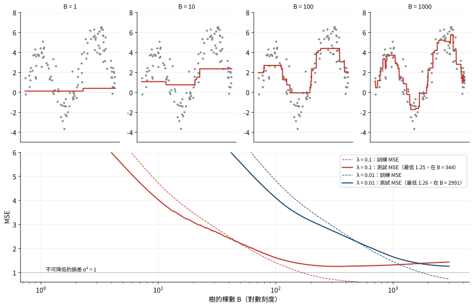
上：一維資料（真實函數是正弦加上斜線、雜訊變異數 1），用樹樁（\(d=1\)）、\(\lambda=0.1\) 做 boosting。\(B=1\) 只有一個階梯，\(B=10\) 抓到大致的高低，\(B=100\) 已經很像真實曲線，\(B=1000\) 開始出現細碎的跳動（配到雜訊）。下：訓練 MSE（虛線）隨 \(B\) 一路下降；測試 MSE 在 \(\lambda=0.1\) 時於 \(B=344\) 最低（1.25），之後慢慢上升，這就是「\(B\) 太大會過度配適」。\(\lambda=0.01\) 學得慢十倍，要到 \(B\approx3000\) 才達到差不多的測試 MSE，但過度配適也來得慢得多。 二、三種方法的比較
bagging
隨機森林
boosting
樹怎麼長
平行、各自用 bootstrap 樣本
同 bagging，但每次分割只看 \(m\) 個變數
依序，每棵配適前一步的殘差
樹的大小
大、不修剪
大、不修剪
小（\(d\) 個分割）
主要降低
變異數
變異數（再加上去相關）
偏差（慢慢學）
\(B\) 太大
不會過度配適
不會過度配適
會 過度配適
參數
\(B\)
\(B\)、\(m\)
\(B\)、\(\lambda\)、\(d\)
考試怎麼考：boosting
計算 ：更新預測（加 \(\lambda\hat f^b\)）、更新殘差（減 \(\lambda\hat f^b\)）（樣題 68、69）；用多棵樹做預測（MAS-II-S19:39）。概念 ：三個參數各自的作用；\(d=1\) 是可加模型；\(B\) 太大會過度配適，和 bagging、隨機森林不同。
本章總整理
樹＝把預測變數空間切成與座標軸平行的長方形；迴歸葉子用平均，分類葉子用多數決。
遞迴二元分割：由上而下、貪婪；迴歸用 RSS，分類用 Gini \(\sum\hat p(1-\hat p)\) 或熵 \(-\sum\hat p\ln\hat p\)（加權平均），錯誤率 \(1-\max\hat p\) 不夠敏感但適合修剪。
成本複雜度：最小化 \(\text{RSS}+\alpha|T|\)；\(\alpha=0\) 最大樹；剪掉一個節點的門檻 \(\alpha=\Delta\text{RSS}/(\text{少掉的葉子數})\)；用交叉驗證選 \(\alpha\)。
樹：好解釋、可畫圖、處理類別變數方便；但準確度較低、不穩健。
bagging：bootstrap＋不修剪的大樹＋平均；變異數 \(\rho\sigma^2+\frac{1-\rho}{B}\sigma^2\)；OOB 約 \(1/e=0.368\)；\(B\) 大不過度配適。
隨機森林：每次分割隨機選 \(m\approx\sqrt p\) 個變數；\(m=p\) 即 bagging；去相關；強變數不被考慮的機率 \(\frac{p-m}{p}\)。
boosting：依序配適殘差的小樹；\(\hat f\mathrel{+}=\lambda\hat f^b\)、\(r\mathrel{-}=\lambda\hat f^b\)；參數 \(B\)（太大會過度配適）、\(\lambda\)、\(d\)（\(d=1\) 可加）。
這一節的精選習題
[MAS-II-F18:39] An actuary creates three tree-based models using bagging, boosting, and random forests. The error on a test data set, as a function of the number of trees in each model, is plotted on the graph below.
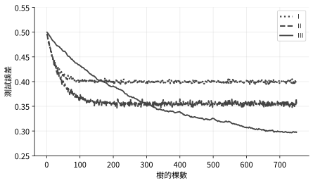
依題目原圖重畫的示意：I（點線）約 100 棵就持平在 0.40；II（虛線）約 150 棵持平在 0.355；III（實線）一路緩慢下降，到 700 棵時約 0.28。 Determine the type of model most likely to have created each of the lines on the graph.
(A) I: Boosting, II: Bagging, III: Random forest
(B) I: Bagging, II: Boosting, III: Random forest
(C) I: Bagging, II: Random forest, III: Boosting
(D) I: Random forest, II: Bagging, III: Boosting
(E) The answer is not given by (A), (B), (C), or (D)
隱藏解答 中文題意
（2018 秋季 MAS-II 第 39 題）精算師用 bagging、boosting、隨機森林建立三個樹模型，測試誤差隨樹的棵數變化如下：
各條線最可能是哪一種模型？
(A) I：boosting，II：bagging，III：隨機森林
(B) I：bagging，II：boosting，III：隨機森林
(C) I：bagging，II：隨機森林，III：boosting
(D) I：隨機森林，II：bagging，III：boosting
(E) 以上皆非
（數據、圖表與選項見上方英文題目。）
解析
bagging 與隨機森林在 \(B\) 夠大後就持平；隨機森林去相關，持平的位置比 bagging 低。boosting 慢慢學，誤差可以持續下降很久（\(B\) 過大才會回升）。所以 I bagging、II 隨機森林、III boosting。
[MAS-II-S19:39] A boosted tree model is defined by \(\lambda=0.2\) and the following four trees:
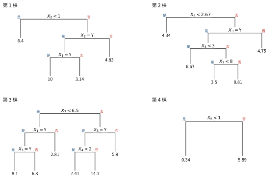
依題目原圖重畫的四棵樹。 You are given the following record:
\(X_1\)
\(X_2\)
\(X_3\)
\(X_4\)
\(X_5\)
\(X_6\)
\(X_7\)
N
6
Y
4
0.5
0.25
6
Calculate the prediction of the boosted tree model for this record.
(A) Less than 2
(B) At least 2, but less than 5
(C) At least 5, but less than 8
(D) At least 8, but less than 11
(E) At least 11
隱藏解答 中文題意
（2019 春季 MAS-II 第 39 題）boosting 模型的 \(\lambda=0.2\)，由以下四棵樹組成（左＝成立）：
一筆資料：\(X_1=\) N、\(X_2=6\)、\(X_3=\) Y、\(X_4=4\)、\(X_5=0.5\)、\(X_6=0.25\)、\(X_7=6\)。求 boosting 模型對這筆資料的預測。
(B) 至少 2，小於 5
(C) 至少 5，小於 8
(D) 至少 8，小於 11
(E) 至少 11
（數據、圖表與選項見上方英文題目。）
解析
第 1 棵：\(X_2<1\) 否 → \(X_3=\) Y 是 → \(X_1=\) Y 否 → 3.14。
第 2 棵：\(X_4<2.67\) 否 → \(X_3=\) Y 是 → \(X_4<3\) 否 → \(X_7<8\) 是 → 3.5。
第 3 棵：\(X_7<6.5\) 是 → \(X_1=\) Y 否 → 2.81。
第 4 棵：\(X_6<1\) 是 → 0.34。
預測 \(=0.2(3.14+3.5+2.81+0.34)=1.958\)。
易錯提醒
忘了乘 \(\lambda\) 會得到 9.79，選 (D)。
觀念題（5 題，仿 SOA 樣題的觀念判斷與小計算，含跨章節）
A boosted regression tree uses \(\lambda=0.1\). Initially \(\hat f=0\). For an observation with \(y=80\), the first tree predicts 50.
Calculate the residual for this observation after the first update.
(A) 30
(B) 72
(C) 75
(D) 5
(E) 45
隱藏解答 中文題意
boosting 的 \(\lambda=0.1\)，一開始 \(\hat f=0\)。某觀察 \(y=80\)，第一棵樹預測 50。第一次更新後的殘差是多少？
解析
\(r=80-0.1(50)=75\)。(A) 忘了乘 \(\lambda\)；(B) 是乘在 \(y\) 上；(D) 是更新後的預測。
A boosted regression tree uses \(\lambda=0.1\). Initially \(\hat f=0\). For an observation with \(y=80\), the first tree predicts 50.
Calculate the updated prediction \(\hat f(x)\) for this observation.
(A) 5
(B) 50
(C) 8
(D) 75
(E) 0
隱藏解答 中文題意
同上題，第一次更新後的預測 \(\hat f(x)\) 是多少？
解析
\(\hat f=0+0.1(50)=5\)。檢查：預測 5 ＋殘差 75 ＝ \(y=80\)。
In boosting, the number of splits in each tree is set to \(d=1\).
Determine the consequence.
(A) The model can capture all two-way interactions
(B) The fitted model is additive, with no interactions between predictors
(C) The model becomes identical to bagging
(D) The shrinkage parameter has no effect
(E) The model cannot overfit
隱藏解答 中文題意
boosting 每棵樹的分割數設為 \(d=1\)，結果是什麼？
解析
每棵樹只用一個變數（樹樁），總和是各變數函數的相加，沒有交互作用。\(d\) 是交互作用的深度。
Determine which ensemble method can overfit if the number of trees \(B\) is too large.
(A) Bagging
(B) Random forests
(C) Both bagging and random forests
(D) Boosting
(E) None of them
隱藏解答 中文題意
哪一種集成方法在樹的棵數 \(B\) 太大時會過度配適？
解析
boosting 每加一棵樹都在配適殘差，持續加下去會開始配適雜訊（本章「集成方法」圖：boosting 在 \(B=146\) 左右最低，之後回升）。bagging 與隨機森林是平均，不會。
In boosting, the shrinkage parameter \(\lambda\) is made smaller.
Determine the typical consequence.
(A) Fewer trees are needed
(B) Each tree must have more splits
(C) The model becomes a random forest
(D) The residuals are no longer updated
(E) More trees are needed to achieve good performance
隱藏解答 中文題意
boosting 的收縮參數 \(\lambda\) 調小，通常的結果是什麼？
解析
每一步只學一點點，要更多步（更大的 \(B\)）才能學到同樣的程度。\(\lambda\) 與 \(B\) 要一起調。